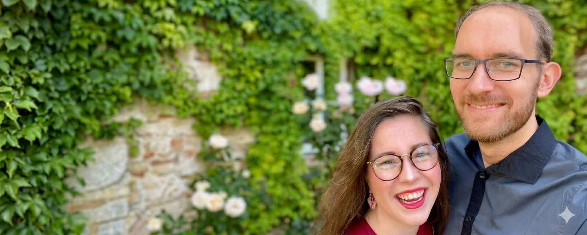
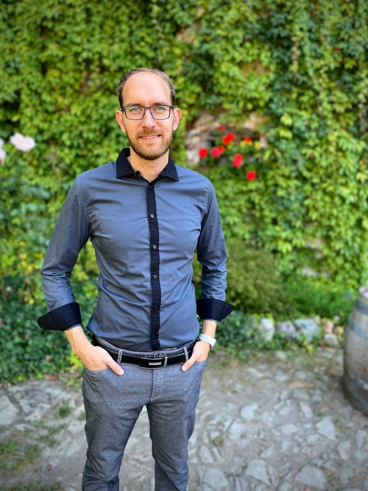
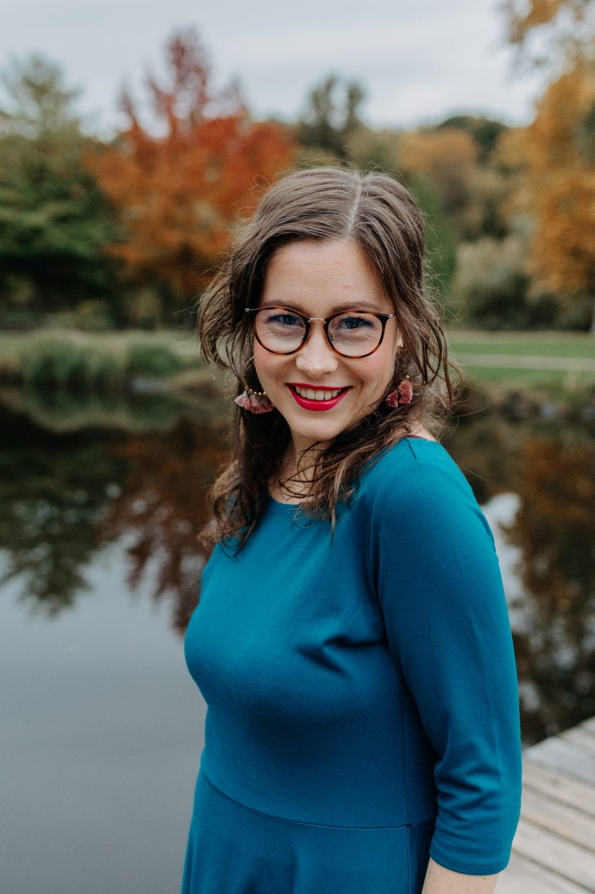

Už nechci být hodná holka / hodný kluk
Kdy:
Kde: Atelier Antonie, Praha 1
Chci se přihlásit (otevře se na nové kartě)
Cesta k autenticitě skrze tělo a hlas.
Jsme Martin a Kristýna. Věříme, že skutečná změna nastává ve chvíli, kdy dovolíme svému tělu i hlasu volně plynout. Propojujeme hloubku práce s tělem s lehkostí hlasové improvizace, abychom pro vás vytvořili bezpečný prostor k objevování sebe sama. Na této stránce budeme pravidelně zveřejňovat odkazy na naše chystané akce a workshopy.
Kdy:
Kde: Atelier Antonie, Praha 1
Chci se přihlásit (otevře se na nové kartě)
Věřím, že tělo je branou k našim emocím a autentickému já. Ve své praxi propojuji cit pro vědomý dotek s hloubkou odborného pohledu ze studia psychologie a sebezkušenosti.

Průvodkyně světem flow, seberozvoje a hlasové improvizace. Pomáhám lidem najít jejich vlastní tón a svobodu v projevu.